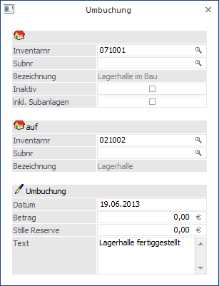
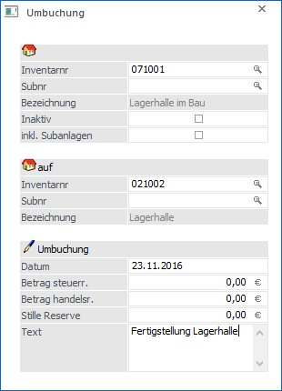

Ein oder mehrere Anlagegüter können auf ein anderes umgebucht werden.
Beispiel
Längerfristige Bau- und Umbauaufträge werden zuerst auf das Konto "im Bau befindliche Anlagen" gebucht. Nach Fertigstellung des Gebäudes erfolgt dann eine Umbuchung auf das Anlagekonto "Gebäude".
Die Um- und Abbuchung erfolgt dabei automatisch.
Gehen Sie dazu in den Menüpunkt
1 Buchen
1 Umbuchung.

Datenfelder
Ø von Inventarnr.
Eingabe der Inventarnummer, die auf eine andere umgebucht werden soll. Nutzen Sie dazu wieder die Möglichkeit der Matchcode-Information, indem Sie entweder die F9-Taste drücken oder die kleine Lupe hinter dem Eingabefeld anklicken.
Ø auf Inventarnr.
Eingabe der Inventarnummer, auf die eine zuvor genannte Inventarnummer umgebucht werden soll (siehe oben). Achten Sie darauf, dass Sie vor der Umbuchung bereits die neue Inventarnummer im Anlagenstamm angelegt haben.
Ø Subnummer
Eingabe der Subnummern zu den einzelnen Inventarnummern.
Ø inkl. Subanlagen
Die Checkbox "inkl. Subanlagen" kann bei Hauptanlagen, für die auch Subanlagen existieren, aktiviert werden.
Gibt es bei einer Hauptanlage, von der auf eine andere Anlage umgebucht wird, Subanlagen, werden bei aktivierter Checkbox diese auch umgebucht. Es wird dabei pro Subanlage eine Umbuchungszeile bei der empfangenden Anlage angelegt. Die gleichmäßige Verteilung des Umbuchungsbetrages basiert auf dem Anschaffungswert.
Ø Datum
Eingabe des Datums, an dem die Umbuchung stattfindet.
Ø Betrag
Eingabe des Werts, der umgebucht werden soll.
Ø Text
Hier kann ein 255stelliger Buchungstext eingegeben werden. Dieser Text wird in den Auswertungen Historien-Journal und Anlagestammblatt angedruckt.
Eine Umbuchung hat eine komplette Integration des umgebuchten Inventargutes in die neue Anlage zur Folge (erhöhter Anschaffungswert, erhöhte Jahres-AfA, etc.).
Hinweis für Österreich:
Für Mandanten mit dem Länderkennzeichen A kann die Umbuchung steuerrechtlich und/oder handelsrechtlich vorgenommen werden.

Ø Betrag steuerr.
Eingabe des steuerrechtlichen Werts, der umgebucht werden soll.
Ø Betrag handelsr.
Eingabe des handelsrechtlichen Werts, der umgebucht werden soll.
Hinweis
Umbuchungszeilen sind im Journal erst nach der Durchführung der Jahres-Abschreibung ersichtlich.
Achtung
Bei einer Umbuchung wird der Wiederbeschaffungsbetrag auf 0 gestellt. Der Betrag wird aber zum Zeitpunkt einer Abschreibung neu berechnet und korrekt verwendet.
Stornierung einer Umbuchung
Eine Umbuchung kann - solange der Abschreibungslauf noch nicht durchgeführt wurde - im Menü "Anlagenstamm", Register "Entwicklung", über den Button "Entfernen" storniert werden.
Bei der Umbuchung wird auch die AfA berechnet. Wie das passieren soll, kann über die ANBU-Parameter (WinLine START, Menüpunkt Parameter / Applikations-Parameter) gesteuert werden:
Ø AfA bei Umbuchungen
Wenn diese Checkbox aktiviert ist, wird bei der Umbuchung die anteilige AfA anhand des Umbuchungsdatums berechnet.
Berechnungsgrundlage für die anteilige AfA:
Beim "abgehenden" Anlagegut wird die im Anlagenstamm hinterlegte Abgangsregel (monatsgenau etc.), beim "aufnehmenden" Anlagegut wird die hinterlegte AfA-Regel (monatsgenau etc.) berücksichtigt.
Wenn die Checkbox nicht aktiviert ist, wird die Umbuchung so gerechnet als ob sie zum Beginn des Jahres erfolgt und richtet sich dann nicht nach dem Umbuchungsdatum.